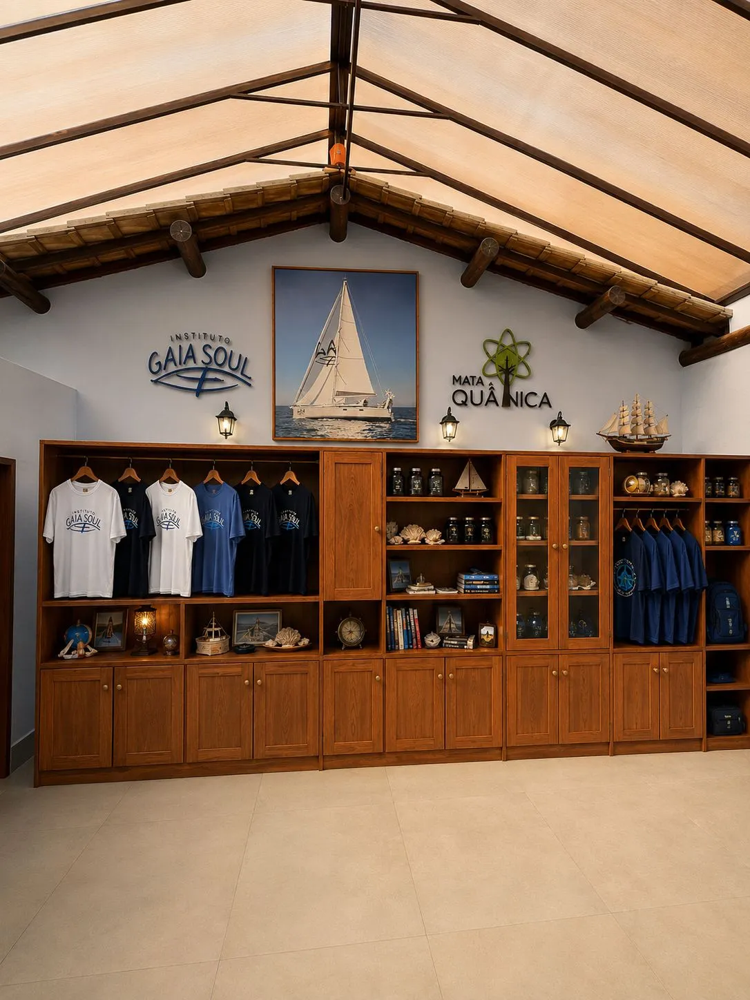
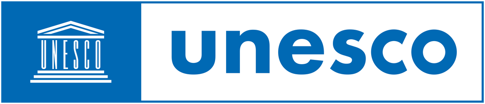
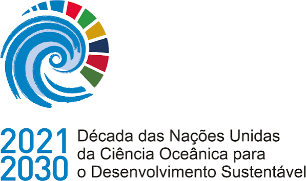

Início / Sobre
O Instituto Gaia Soul nasceu em 2019 com o propósito de aproximar pessoas ao oceano por meio da educação, ciência, inovação e experiências transformadoras.
Acreditamos que só cuidamos do que conhecemos.

Informar, sensibilizar e engajar as pessoas para a Cultura Oceânica e a difusão da OceanoTerapia!
Sensibilizar, até 2030, a consciência ecológica de pelo menos 100 mil pessoas, através de nossos conteúdos, projetos e iniciativas sociais.
Apoio da


Trabalhamos ao lado de instituições que compartilham o compromisso com o oceano.
Conheça os projetos